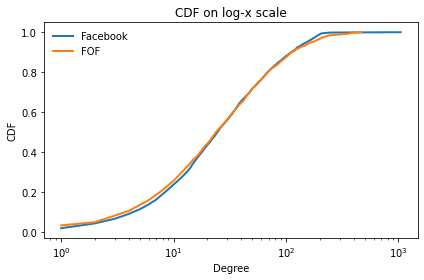
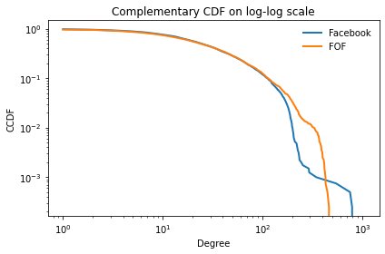
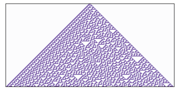
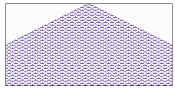

Quiz 2#
BEFORE YOU START THIS QUIZ:
Click on “Copy to Drive” to make a copy of the quiz
Click on “Share”,
Click on “Change” and select “Anyone with this link can edit”
Click “Copy link” and
Paste the link into this Canvas assignment.
This quiz is based on Chapters 4 and 5 of Think Complexity, 2nd edition.
Copyright 2021 Allen Downey, MIT License
from os.path import basename, exists
def download(url):
filename = basename(url)
if not exists(filename):
from urllib.request import urlretrieve
local, _ = urlretrieve(url, filename)
print('Downloaded ' + local)
download('https://github.com/AllenDowney/ThinkComplexity2/raw/master/notebooks/utils.py')
import matplotlib.pyplot as plt
import numpy as np
import networkx as nx
from utils import decorate
Question 1#
Let’s see if we can find a graph model that does a better job matching the clustering, path length, and degree distribution of online social networks.
Here’s the Facebook data from Chapter 4 again.
download('https://snap.stanford.edu/data/facebook_combined.txt.gz')
def read_graph(filename):
G = nx.Graph()
array = np.loadtxt(filename, dtype=int)
G.add_edges_from(array)
return G
fb = read_graph('facebook_combined.txt.gz')
Here are the number of nodes, n, the number of edges, m, and the average degree, k.
n = len(fb)
m = len(fb.edges())
k = int(round(2*m/n))
n, m, k
(4039, 88234, 44)
The average clustering coefficient is about 0.6
from networkx.algorithms.approximation import average_clustering
C = average_clustering(fb)
C
0.618
The average path length is short.
def random_path_lengths(G, nodes=None, trials=1000):
"""Choose random pairs of nodes and compute the path length between them.
G: Graph
nodes: list of nodes to choose from
trials: number of pairs to choose
returns: list of path lengths
"""
if nodes is None:
nodes = G.nodes()
else:
nodes = list(nodes)
pairs = np.random.choice(nodes, (trials, 2))
lengths = [nx.shortest_path_length(G, *pair)
for pair in pairs]
return lengths
def estimate_path_length(G, nodes=None, trials=1000):
return np.mean(random_path_lengths(G, nodes, trials))
L = estimate_path_length(fb)
L
3.706
And the standard deviation of degree is high.
def degrees(G):
"""List of degrees for nodes in `G`.
G: Graph object
returns: list of int
"""
return [G.degree(u) for u in G]
np.mean(degrees(fb)), np.std(degrees(fb))
(43.69101262688784, 52.41411556737521)
FOF model#
I propose a new graph model called FOF for “friends of friends”.
It starts with a complete graph with k+1 nodes, so initially all nodes have degree k.
Then we generate the remaining nodes like this:
Create a new node we’ll call the source.
Select a random target uniformly from existing nodes.
Iterate through the friends of the target. For each one, with probability
p, form a triangle that includes the source, friend, and a random friend of the friend.Finally, connect the source and target.
Fill in the following function to implement this process.
Hints:
You can use
flip, provided below.To create the complete graph, I used
nx.complete_graph.I found it helpful to write a separate function to generate triangles.
def fof_graph(n, k, p=0.25):
"""Make a FOF graph.
n: number of nodes
k: average degree
p: probability of adding a triangle
returns: nx.Graph
"""
# FILL THIS IN
def flip(p):
return np.random.random() < p
# Solution
def fof_graph(n, k, p=0.25):
"""Make a FOF graph.
n: number of nodes
k: average degree
p: probability of adding a triangle
returns: nx.Graph
"""
# start with a completely connected core
G = nx.complete_graph(k+1)
for source in range(len(G), n):
# choose a random node
target = np.random.choice(list(G.nodes))
# enumerate neighbors of target and add triangles
friends = list(G.neighbors(target))
for friend in friends:
if flip(p):
triangle(G, source, friend)
# connect source and target
G.add_edge(source, target)
return G
# Solution
def triangle(G, source, friend):
"""Chooses a random neighbor of `friend` and makes a triangle.
Triangle connects `source`, `friend`, and a random neighbor of `friend`.
"""
fof = set(G[friend])
if source in G:
fof -= set(G[source])
if fof:
w = np.random.choice(list(fof))
G.add_edge(source, w)
G.add_edge(source, friend)
Use your function to make a FOF graph with the same number of nodes as the Facebook data, and approximately the same number of edges.
You might have to adjust p to get the number of edges right.
# Solution
fof = fof_graph(n, k, p=0.25)
len(fof), len(fof.edges())
(4039, 94028)
You can run the next few cells to see how well the result matches the Facebook data (but it’s not necessary for the quiz).
Here’s the average clustering.
C, average_clustering(fof)
(0.618, 0.22)
And the path length.
L, estimate_path_length(fof)
(3.706, 2.89)
And the degree distribution.
try:
import empiricaldist
except ImportError:
!pip install empiricaldist
from empiricaldist import Cdf
cdf_fb = Cdf.from_seq(degrees(fb), name='Facebook')
cdf_fof = Cdf.from_seq(degrees(fof), name='FOF')
Here’s the CDF on a log-x scale.
cdf_fb.plot()
cdf_fof.plot()
decorate(xlabel='Degree',
ylabel='CDF',
xscale='log',
title='CDF on log-x scale')

And the complementary CDF on a log-log scale.
(1 - cdf_fb).plot()
(1 - cdf_fof).plot()
decorate(xlabel='Degree',
ylabel='CCDF',
xscale='log',
yscale='log',
title='Complementary CDF on log-log scale')

Question 2#
Here’s the code from Chapter 5 that makes a 1-D cellular automaton.
class Cell1D:
"""Represents a 1-D a cellular automaton"""
def __init__(self, rule, n, m=None):
"""Initializes the CA.
rule: integer
n: number of rows
m: number of columns
Attributes:
table: rule dictionary that maps from triple to next state.
array: the numpy array that contains the data.
next: the index of the next empty row.
"""
self.table = make_table(rule)
self.n = n
self.m = 2*n + 1 if m is None else m
self.array = np.zeros((n, self.m), dtype=np.int8)
self.next = 0
def start_single(self):
"""Starts with one cell in the middle of the top row."""
self.array[0, self.m//2] = 1
self.next += 1
def start_random(self):
"""Start with random values in the top row."""
self.array[0] = np.random.randint(2, size=self.m)
self.next += 1
def loop(self, steps=1):
"""Executes the given number of time steps."""
for i in range(steps):
self.step()
def step(self):
"""Executes one time step by computing the next row of the array."""
a = self.array
i = self.next
window = [4, 2, 1]
c = np.correlate(a[i-1], window, mode='same')
a[i] = self.table[c]
self.next += 1
def draw(self, start=0, end=None):
"""Draws the CA using pyplot.imshow.
start: index of the first column to be shown
end: index of the last column to be shown
"""
a = self.array[:, start:end]
plt.imshow(a, cmap='Purples', alpha=0.7)
# turn off axis tick marks
plt.xticks([])
plt.yticks([])
def make_table(rule):
"""Make the table for a given CA rule.
rule: int 0-255
returns: array of 8 0s and 1s
"""
rule = np.array([rule], dtype=np.uint8)
table = np.unpackbits(rule)[::-1]
return table
rule = 30
n = 100
ca = Cell1D(rule, n)
ca.start_single()
ca.loop(n-1)
ca.draw()

Make a class called Cell1D5N that implements a 1-D CA with a 5 cell neigborhood.
You can either modify the code above, or add new code below.
To make the table, you don’t have to decode a rule number; instead, generate a random array of 1s and 0s like this:
np.random.choice([0, 1], size=size, p=[1-p, p])
The parameter p controls the proportion of 1s. Your __init__ method should take p as a parameter instead of rule.
# Solution
class Cell1D5N:
"""Represents a 1-D a cellular automaton"""
def __init__(self, p, n, m=None, seed=None):
"""Initializes the CA.
rule: integer
n: number of rows
m: number of columns
Attributes:
table: rule dictionary that maps from triple to next state.
array: the numpy array that contains the data.
next: the index of the next empty row.
"""
if seed:
np.random.seed(seed)
self.table = np.random.choice([0, 1], size=32, p=[1-p, p])
self.n = n
self.m = 2*n + 1 if m is None else m
self.array = np.zeros((n, self.m), dtype=np.int8)
self.next = 0
def start_single(self):
"""Starts with one cell in the middle of the top row."""
self.array[0, self.m//2] = 1
self.next += 1
def start_random(self):
"""Start with random values in the top row."""
self.array[0] = np.random.randint(2, size=self.m)
self.next += 1
def loop(self, steps=1):
"""Executes the given number of time steps."""
for i in range(steps):
self.step()
def step(self):
"""Executes one time step by computing the next row of the array."""
a = self.array
i = self.next
window = [16, 8, 4, 2, 1]
c = np.correlate(a[i-1], window, mode='same')
a[i] = self.table[c]
self.next += 1
def draw(self, start=0, end=None):
"""Draws the CA using pyplot.imshow.
start: index of the first column to be shown
end: index of the last column to be shown
"""
a = self.array[:, start:end]
plt.imshow(a, cmap='Purples', alpha=0.7)
# turn off axis tick marks
plt.xticks([])
plt.yticks([])
Use the following code to test your implementation.
p = 0.5
n = 100
ca = Cell1D5N(p, n)
ca.start_single()
ca.loop(n-1)
ca.draw()
